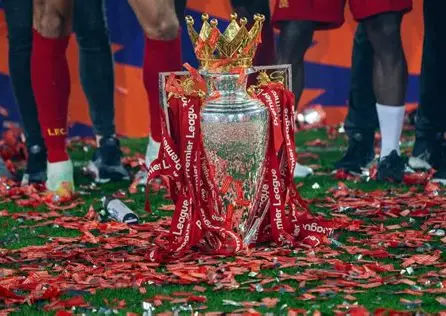
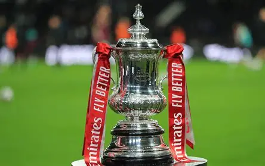
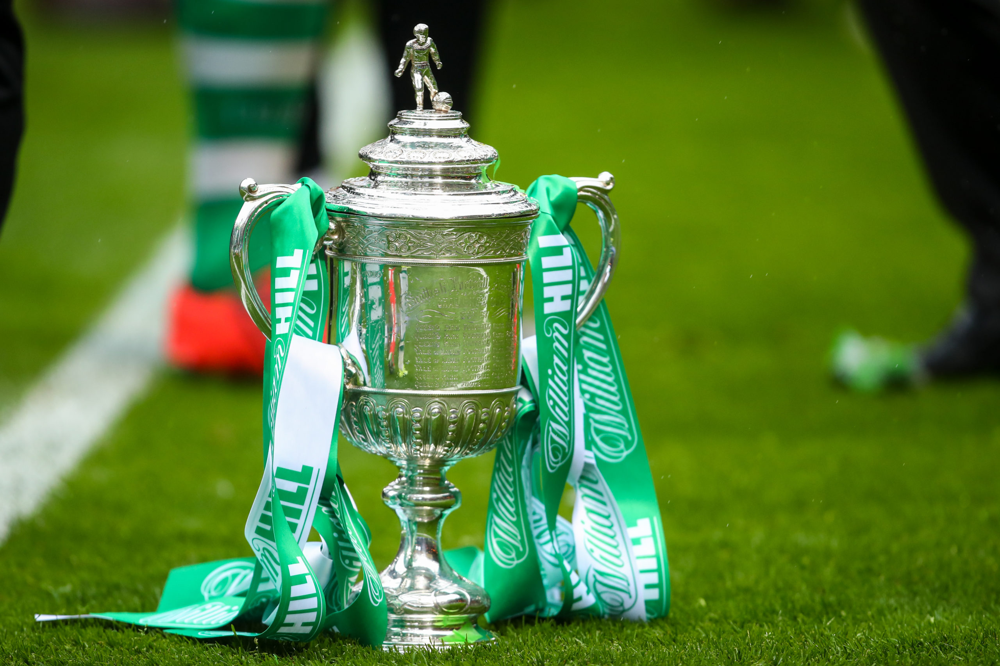
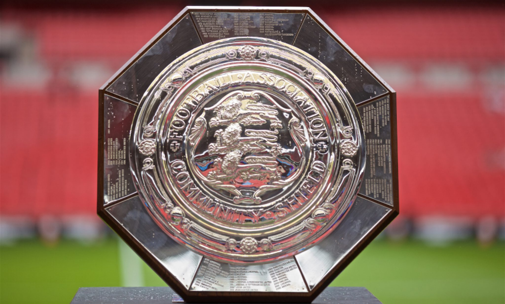
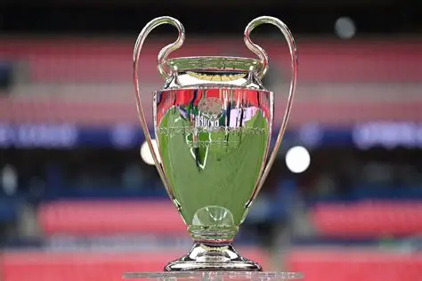
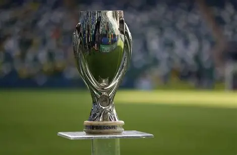
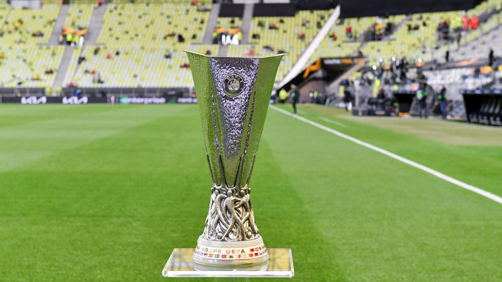
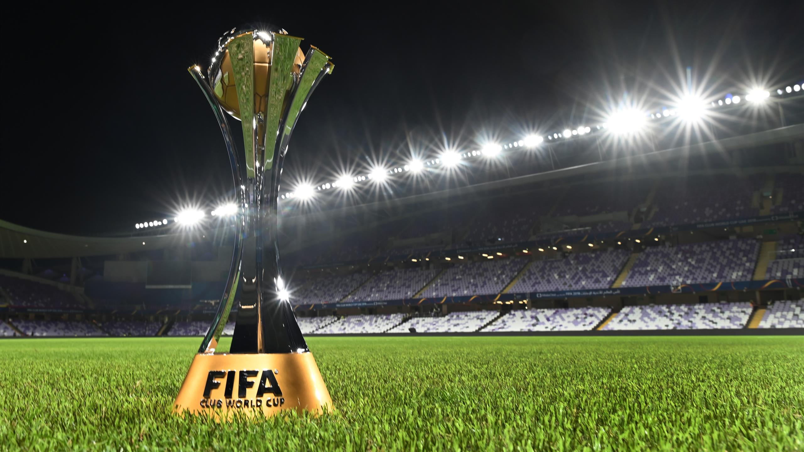

Liverpool FC – Trophies & Honors
Liverpool Football Club is one of the most decorated clubs in world football. With a rich history of domestic and international success, here’s a breakdown of all the major trophies the Reds have won.

Premier League / First Division
🏆 19 Titles
Most recently: 2019–20

FA Cup
🏆 8 Titles
Most recently: 2021–22

League Cup
9 Titles
Most recently: 2023–24

FA Community Shield
15 Shields
Most recently: 2022

UEFA Champions League
6 Titles
Most recently: 2018–19

UEFA Super Cup
4 Titles
Most recently: 2019

UEFA Europa League / UEFA Cup
3 Titles
Most recently: 2000–01

FIFA Club World Cup
1 Title
Year: 2019
* Trophy counts include First Division wins before the Premier League era. Images sourced from Wikimedia Commons or representative artwork.